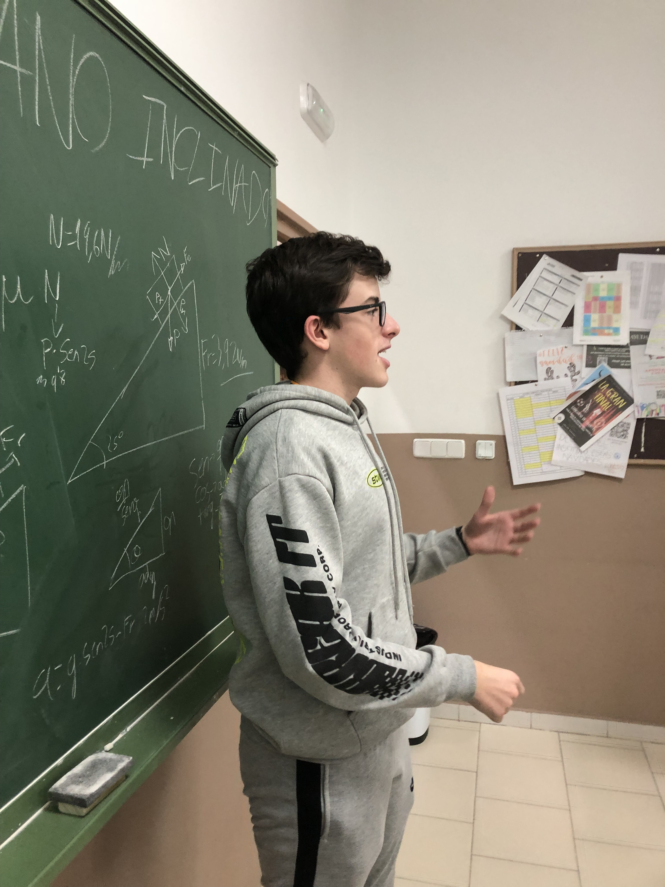

Ayuda Mutua
Reflexión:
Co-lideré un proyecto llamado Ayuda Mutua, en el que alumnos mayores ayudaban a otros más pequeños con sus deberes y exámenes. Junto con algunos compañeros, organizamos un programa de tutorías que se llevó a cabo después de clases tres días por semana. Nos enfocamos en promover el proyecto mediante carteles para atraer a los interesados, tanto estudiantes como profesores, creando carteles específicos enfocados para cada uno de estos dos grupos. El resto de organizadores y yo también ayudamos dando algunas clases a los estudiantes. Este proyecto me permitió mejorar mis habilidades de organización, comunicación y trabajo en equipo. Además, creó un ambiente de colaboración y apoyo mutuo que benefició tanto a los tutores como a los estudiantes más jóvenes, dejando una huella positiva en nuestra escuela.
Por motivos de protección de datos de los alumnos, no está permitido publicar fotos en las que aparezca su cara, por lo que el número de fotos es reducido.
Galería:
-
_page-0001.jpg)
-

-

- 